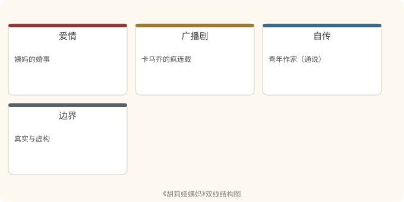

胡莉娅姨妈与作家
一、基本信息
| 作者 | 略萨 |
|---|---|
| 成书/出版 | 1977年（作者页 B159 口径：胡莉娅姨妈与作家（1977）） Mario Vargas Llosa — Encyclopaedia Britannica（百科全书） |
| 国别/地区 | 秘鲁 |
| 时代 | 现当代 · 20世纪 |
| 体裁 | 长篇小说 |
| 语言 | 西班牙语 |

《胡莉娅姨妈》双线结构图（主题·结构图）
二、创作背景
作者页（B159）：略萨 major_works 载'胡莉娅姨妈与作家（1977）'（B159 作者页定位，详见 chengshiyugou 条核对）。
题材（通说待核）：半自传——青年'略萨'（小说家）与小32岁的胡莉娅姨妈的婚事，与广播剧作家'卡马乔'的疯癫连载双线。
三、内容脉络
婚事与广播剧：现实爱情与疯癫剧本的双线（通说待核）。
四、主要人物表
| 人物 | 身份 | 说明 |
|---|---|---|
| 胡莉娅 | 姨妈 | （通说待核） |
| 卡马乔 | 广播剧作家 | 疯癫的连载（通说待核） |
五、主题与艺术特点
- 爱情与写作的双线（通说）。
- 广播剧的疯狂（通说待核）。
- 自传与虚构的边界（通说待核）。
六、影响与评论
- 作者页：略萨代表作（B159 作者页口径）。
Mario Vargas Llosa — Encyclopaedia Britannica（百科全书） - 1983年电影改编（Tune in Tomorrow——通说待核）。
Mario Vargas Llosa — Encyclopaedia Britannica（百科全书）
七、阅读建议
难点
- 双线交替的节奏。
- 自传伦理。
- 《胡莉娅姨妈与作家》（人民文学出版社/上海译文版本，通说待核）。
- 西班牙文原版。
略萨轻松面之作。
八、待核实
- 1977年出版（Seix Barral说）核对。
- 胡莉娅/卡马乔人名核对。
- 离婚风波的自传事实待核。
本页主要来源
略萨的其他收录作品：城市与狗